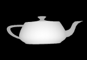
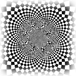
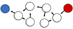
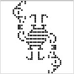

Code for Fun
Stereogram Movies
|  |
Most people are familiar with single image autostereograms (MagicEye pictures). Amazingly, human beings are also able to see stereogram animations! After seeing the ASCII Stereogram Movie Generator, I decided to make my own generator using the OpenGL depth buffer. You can view several of my stereogram movies below, which use simple OpenGL shapes. Make sure to wait until they are fully loaded before trying to see the hidden shape (they will look like TV static when loaded). You may also be interested in downloading the Python code. To run the programs, you will need the Python Image Library and PyOpenGL. Enjoy! |
| [Python Code] • [Movie 1] • [Movie 2] • [Movie 3] • [Movie 4] |
{kind=link}
{kind=link}
{kind=link}
{kind=link}
Inversion in a Circle
|  |
I wrote a short paper about geometric inversion in a circle for Douglas Hofstadter's class on Insight and Invention in Geometry. The images below were generated with a simple program I created to perform inversion of images in a circle. If you'd like to play around with the image inversion program, you can download the C# code. There are a handful of options to try, such as changing the center of the circle, scaling the inverted image, and tiling the plane with the input image.
|
| [C# Code] • [Checkerboard Plane] • [Rainbow Ocean] • [Circuit Vortex] |
{kind=link}
{kind=link}
{kind=link}
Lutz Complexity
|  |
Have you always wanted to use the Minimum Description Length principle as a fitness function in order to find the least complex hierarchical modular decomposition for a Boost Graph Library graph of dependencies in C++? No? Well, one person might. This code lets you compute the "Lutz Complexity" of a graph, which could be used in a genetic algorithm to find the "best", or least complex, way of putting nodes into modules based purely on their dependencies . |
| [C++ Code] |
The Game of Life
|  |
What coding website would be complete without a simulation of the Game of Life? This simple game has delighted children and struck fear in the hearts of introductory programming students for nearly two generations! Be the first of your friends to experience the magic a glider or scratch your head trying to figure out what on Earth this is! Barring that, see if you can crash the javascript engine in your browser with my inefficient PHP code. |
| [Web Site] • [PHP Code] • [Patterns] |
Quake 3-ish Multiplayer Shooter
For my final project in an undergraduate game programming class, I wrote a 3-D multiplayer first-person shooter. The game is written in C#, and uses OpenGL for 3-D rendering. Character models and maps come from Quake 2 and 3 respectively, though the weapons and items are designed by yours truly.
|
I included a handful of multiplayer modes, such as standard deathmatch, a "collect as many items as possible" mode, and something called "marked man," where the goal was to be the marked man at the end of the round (you had to kill the previous marked man first). As with most of my own games, I quickly found that other people are much better than me. Next time, I plan to put in a "kill everyone else" button. [C# Code] • [Installers] |
|
DOS-Based Window Manager
|
Back when the 486 was popular (or at least was the only kind of computer that my high school could afford), I wrote myself a simple graphical window manager in Pascal. It ran in good ol' mode 13h, which was 320x200 with 256 colors, and used no external graphics libraries (all of the core graphics routines were hand-coded in assembly). I had planned to make my own "operating system" like Windows 3.11, complete with applications, but game programming soon stole my heart. Thanks to DOSBox, though, Mike OS will continue to live on, unaware that it is only a relic of a simpler age. |
|
| [Pascal Code] |
Contents © 2013 Michael Hansen - Powered by Nikola